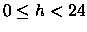
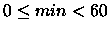
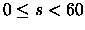

| Time |
Let a time point be given as 6 integers y, m, d, h, min, s where 1970 <= y < 2030, 0 < m < 13, 0 < d < 32, , , . Write a program which computes how many periods of a given length fit between two given time points. A period is given by a pair consisting of a positive integer and a word expressing a time unit, i.e. year or month or day or hour or minute or second. Every 4th year is a leap year, except every 100th which is not except every 400 year which is. A length of the year varies according to leap years. The same is true for the month February. Time units always start as usual, e.g., a year starts at 1st January, a month starts at its 1st day, a day starts at 0 hours 0 minutes 0 seconds, etc. A period ends after its last second.
1997 12 31 23 59 59 1998 1 1 0 0 0 1 second 2000 2 29 0 0 0 2000 2 29 23 59 59 1 day 2000 2 29 0 0 0 2000 3 1 0 0 0 24 hour 1996 12 31 20 30 0 1997 1 1 7 30 0 60 minute 1996 12 31 20 30 0 1997 1 1 7 30 0 1 hour
1 0 1 11 10